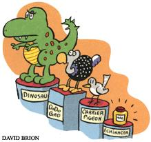

Nature's Ailing Medicine
February/March 2000
According to a joint survey by the World Wildlife Fund, the World Conservation Union and the Smithsonian Institute, one in eight plants worldwide is endangered. Wild medicinal plants in particular are being severely threatened due to overharvesting to meet buyer demand.
In response, at least one group is looking to ease the impact. The National Center for the Preservation of Medicinal Herbs was founded in 1998 by Frontier Natural Products Co-op to grow endangered species of medicinal herbs. The nonprofit center, which is based on 68 acres in Meiga County, Ohio, not only cultivates healing herbs, but it also researches efficient growing techniques that can be handed down to local growers.
"As an industry, we were once really small," ex plains Frontier manager Tim Blakley. "Back in the '70s, we were almost begging people to use herbs; now that we've gotten so big, we're al most begging people not to use certain herbs.
If we keep growing the way we have been, the tradition of harvest ing herbs from the wild is simply not going to be sustainable." Among the 15 "critical-to cultivate" crops being grown and studied at the medicinal herbs center are goldenseal, American ginseng, wild yam and echi nacea. The work force includes herbalists, scientists, Ohio University students and local volunteers.
According to Blakley, the center has already brought goldenseal back from the brink of endangerment, and he estimates that a sustainable crop of the healing herb now makes up nearly 10% of the market total.
"The ultimate goal is to allow the industry to have a cultivated, sustainable supply [of herbs] for the long term," says Blakley. After all, nature's medicine sometimes needs a healing hand, too.
-Destinee-Charisse Royal
|
 |
 |
|